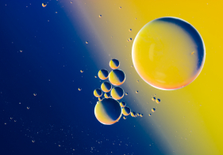
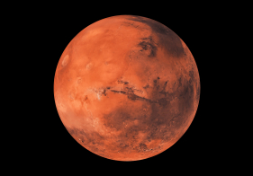
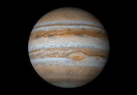

Güneş Sistemi

GEZEGENLER NEDEN YUVARLAKTIR?
Gezegenler, kütle çekiminden dolayı yuvarlaktır.Gezegenin kütle çekimi, her taraftan, her şeyi, eşit bir şekilde kendi merkezine doğru çeker. Tıpkı bisiklet jantlarında tellerinin jantı merkeze doğru çekerek düzgün tutması gibi. Yani kütle çekimi her tarafı eşit çekim uyguladığı için gezegenin şeklini üç boyutlu bir küre haline getirir.


MARS
Mars, Dünya’nın yarısı kadar olan soğuk bir çöl gezegenidir. Toprağında bulunan demirden dolayı kırmızı gözükür ve bu sebeple “Kırmızı Gezegen” olarak da adlandırılır. Dünya gibi Mars’ın mevsimleri, kutupları, volkanları, kanyonları ve hava olayları vardır. Atmosferi çok incedir. Karbon dioksit, nitrojen ve argondan meydana gelir.

JÜPİTER
Jüpiter, Güneş Sistemimizdeki en büyük gezegendir. Yıldız olmaya yaklaşmış bir boyutu vardır fakat büyüklüğü belli bir miktara ulaşmadığı için merkezinde nükleer tepkime başlamamıştır. Atmosferi dönen bulut çizgileri ile kaplıdır. “Büyük Kırmızı Leke” olarak adlandırılan yerde yüzlerce yıldır devam eden fırtınalar vardır.